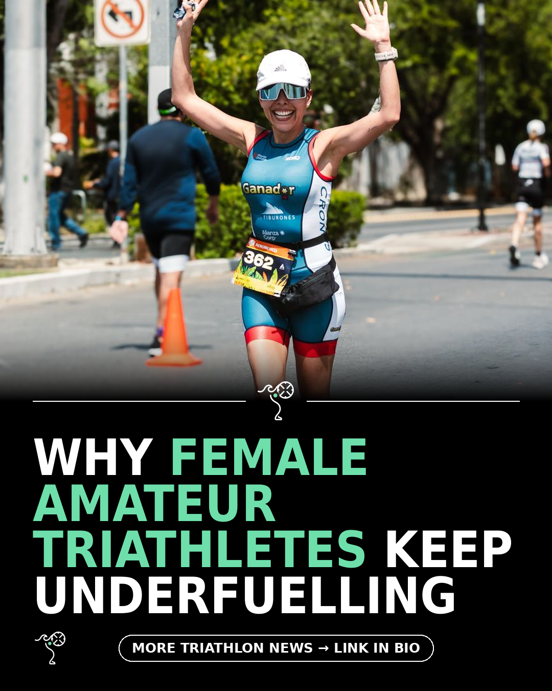

Triathlon News Daily
Sunday, 15 November 2026 · generated automatically

Today's stories
- The female fuelling gap holding amateur triathletes back220 Triathlon
- Chocolate-dipped gingerbread cookies for the off-season baking trayMarathons & Motivation
- Twenty Christmas cookie recipes for the off-season kitchenMarathons & Motivation